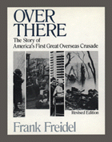

The daily realities and shared emotions of men fighting the Great War
The daily realities and shared emotions of men fighting the Great War


 The daily realities and shared emotions of men fighting the Great War
The daily realities and shared emotions of men fighting the Great War

|  |
Over ThereThe Story of America's First Great Overseas CrusadeRevised EditionFrank Friedel, foreword by Edward M. Coffmancloth EAN: 978-0-87722-718-2 (ISBN: 0-87722-718-7) |
Over There is a richly illustrated social history of Americans� involvement in World War I. Frank Freidel incorporates numerous quotations from regimental histories and from diaries, letters, and memoirs of soldiers involved in the conflict. The soldiers� own words are woven together seamlessly to relate their first-hand experiences in the trenches and the shared emotions of the men fighting in the Great War. The 172 photographs and 8 maps dramatically complement the verbal account and lend an immediacy to the narrative descriptions of these soldiers� lives.
Abridged from the 1964 edition that has been out of print for over a decade, this new edition is arranged chronologically, from the beginning of American troop involvement to the end of the war. The narrative portrays how some of the two million Americans who participated in the first U.S. overseas crusade experienced this mass discovery of Europe along with the awful realities of twentieth-century warfare. It explores the real feelings of those sent to make the world safe for democracy, and it is especially poignant in that it is told in their own words.
Frank Freidel is Bullitt Professor Emeritus of History at the University of Washington and Charles Warren Professor Emeritus of American History at Harvard University.
© 2015 Temple University. All Rights Reserved. This page: http://www.temple.edu/tempress/titles/774_reg.html.